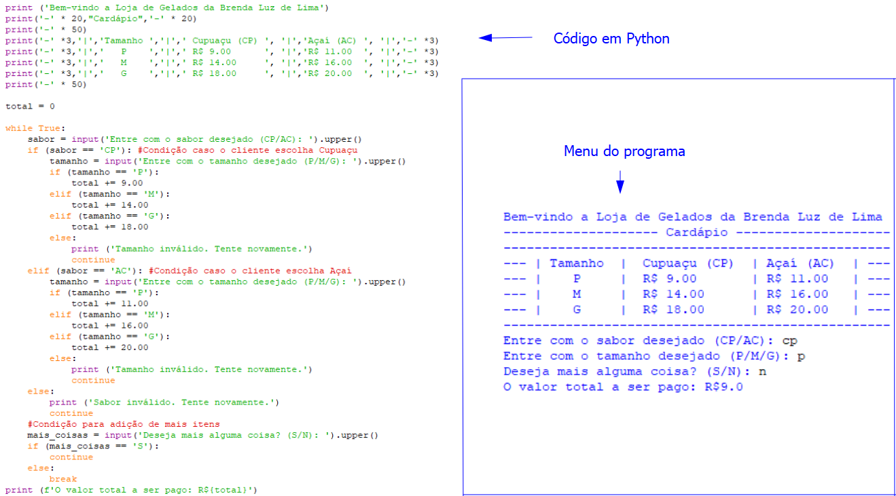

Olá, seja bem-vindo(a) ao meu site!
Este é um site sobre mim, criado com o objetivo de por em prática os conhecimentos obtidos por meio da disciplina de Fundamentos da Programação Web.
O menu superior poderá ser utilizado para explorar os diferentes tópicos presentes no site.
Sobre mim
Me chamo Brenda e atualmente faço parte do curso de Análise e Desenvolvimento de Sistemas junto a Uninter.
Faço parte da modalida à distância do curso, estando atrelada ao polo alocado no centro de Floripa.
Possuo 24 anos e gosto muito de filmes, livros e jogos!
Formação
Possuo o ensino fundamental e médio completo. Atualmente estou cursando o ensino superior junto a Uninter.
Realizei, no passado, aulas de inglês junto a escola de idiomas CNA.
Portfólio
Um exemplo para o portfólio trata-se de um dos programas desenvolvidos para a disciplina de Lógica de Programação e Algoritmos.
O exemplo atrela-se ao desenvolvimento de programa voltado a venda de produtos, com o objetivo de criar um menu para compras.
Abaixo segue imagem ilustrando o código desenvolvido em Python e o menu resultante do programa:

Contato
E-mail: brendaluzlima123@gmail.com